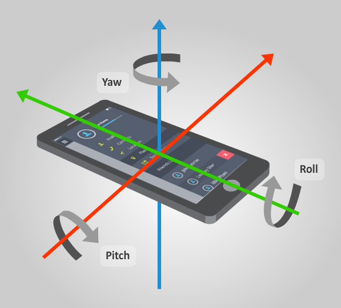
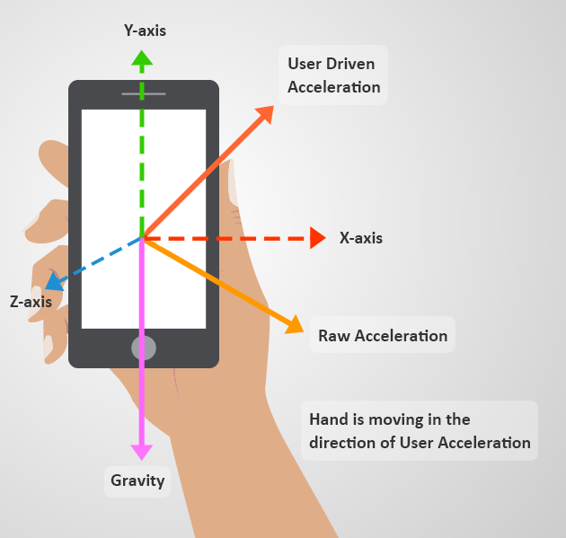
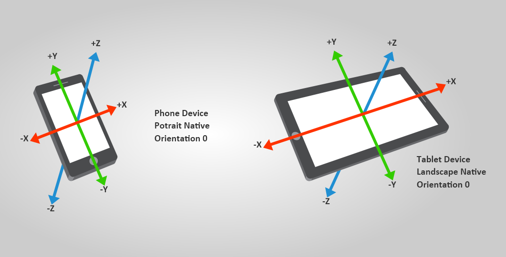
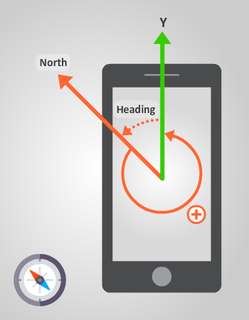

センサー
中級 プログラマー
プロジェクトの入力デバイスとして、ジャイロスコープや加速度計などのさまざまなセンサーを使用できます。センサーはモバイル ゲームでよく使用されます。
センサーにアクセスして以下のことを行うには、InputManager を使用します。
- センサーが Stride でサポートされているかどうかを調べる
- センサーを無効にする
- センサーのデータを取得する
Stride は、Orientation、Accelerometer、UserAcceleration、Gravity、Compass、Gyroscope の 6 種類のセンサーからデータを取得できます。これらのセンサーは ISensorDevice を継承します。
センサーの種類ごとに、既定のインスタンスが作成されます。各インスタンスには、InputManager からアクセスできます。
センサーは状態に基づきます。各センサー インスタンスは、フレームごとに自動的に更新され、直前の更新でのセンサーの値を格納しています。
たとえば、加速度計にアクセスするには、以下を使用します。
var accelerometer = Input.Accelerometer;
センサーが使用できるかどうかを調べる
センサーの値を取得する前に、デバイスでセンサーを使用できるかどうかを確認します。そのためには、使用するセンサーが null ではないことを調べます。たとえば、コンパスが使用できるかどうかを調べるには、次のようにします。
var hasCompass = Input.Compass != null;
Note
デバイスがセンサーをネイティブにサポートしていない場合、Stride はデバイスの他のセンサーを使用して列挙を試みます。
センサーを有効にする
センサー データの取得と更新には多大な CPU 時間を要するので、既定では、使用可能なすべてのセンサーが無効になっています。
センサーを有効にするには、IsEnabled を true に設定します。センサーが必要ない場合は、このプロパティを false に設定して無効にします。
方向センサーを使用する
方向センサーは、重力と地球の北極を基にして、デバイスの向きを示します。デバイスの Y 軸が磁北と一致し、Z 軸が重力と一致している場合、方向は null になります。方向データを使用して、ゲームのさまざまなアクションを制御できます。

デバイスの現在の方向を取得するには、Input.Orientation を使用します。
| プロパティ | 説明 | 宣言 |
|---|---|---|
| Roll | X 軸を中心とする回転です。 | public float Roll { get; } |
| Pitch | Y 軸を中心とする回転です。 | public float Pitch { get; } |
| Yaw | Z 軸を中心とする回転です。 | public float Yaw { get; } |
| Rotation Matrix | デバイスの回転です。 | public Matrix RotationMatrix { get; } |
| Quaternion | デバイスの方位と回転です。 | public Quaternion Quaternion { get; } |
次に例を示します。
var orientation = Input.Orientation.Quaternion;
Note
Stride は、ピッチ/ヨー/ロール、回転マトリックス、または四元数の形式で方位を提供します。ジンバル ロック による悪影響がないので、四元数形式を使用することをお勧めします。
運動センサー
運動センサーは、傾斜、振動、揺動などの加速力を測定します。Stride では 3 種類の運動センサーがサポートされています。
- Accelerometer: 未加工の加速度を測定します
- Gravity: 重力のみを測定します
- UserAcceleration: ユーザーによって適用された加速度のみを測定します
センサーは、物理的関係 Accelerometer = Gravity + UserAcceleration を使用します。

運動センサーには、デバイスでの現在の加速度ベクトルを指定する 1 つのフィールドがあります。加速度の測定単位はメートル毎秒毎秒です。
次の図は、スマートフォンおよびタブレットでの加速度の測定に Stride が使用する座標基底を示したものです。

加速度計を使用する
加速度計は、デバイスに加えられた未加工の加速度を測定します。これには、重力とユーザー加速度が含まれます。
Note
ユーザーが力を加えていない場合、デバイスの加速度は重力と等しくなります。
未加工の加速度を取得するには、Accelerometer.Acceleration を使用します。次に例を示します。
var acceleration = Input.Accelerometer.Acceleration;
ユーザー加速度センサーを使用する
ユーザー加速度センサーは加速度計と似ていますが、ユーザーによって加えられた加速度だけ (重力加速度を除いたもの) を測定します。
ユーザー加速度を取得するには、UserAcceleration.Acceleration を使用します。次に例を示します。
var userAcceleration = Input.UserAcceleration.Acceleration;
重力センサーを使用する
重力センサーは、デバイスに加えられている重力 (メートル毎秒毎秒) の向きと大きさを示す 3D ベクトルを提供します。
重力ベクトルを取得するには、GravitySensor を使用します。次に例を示します。
var gravityVector = Input.Gravity.Vector;
コンパス センサーを使用する
コンパスは、デバイスの先端の方向と北極の方向がなす角度を示します。これは、たとえば、回転やデジタル マップの位置合わせに役立ちます。

この角度を取得するには、CompassSensor.Heading を使用します。次に例を示します。
var heading = Input.Compass.Heading;
ジャイロスコープを使用する
ジャイロスコープは、デバイスの回転速度 (ラジアン/秒) を測定します。

回転速度を取得するには、GyroscopeSensor.RotationRate を使用します。次に例を示します。
var rotationRate = Input.Gyroscope.RotationRate;
var rotationSpeedX = rotationRate.X;
var rotationSpeedY = rotationRate.Y;
var rotationSpeedZ = rotationRate.Z;
コード例
public class SensorScript : AsyncScript
{
public override async Task Execute()
{
// センサーを使用できるかどうかを調べる
if(Input.Accelerometer != null)
return;
// センサーをアクティブにする
Input.Accelerometer.IsEnabled = true;
while (Game.IsRunning)
{
// 現在の加速度を読み取る
var accel = Input.Accelerometer.Acceleration;
// 必要な処理を実行する...
await Script.NextFrame();
}
// 使用した後でセンサーを無効にする
Input.Accelerometer.IsEnabled = false;
}
}